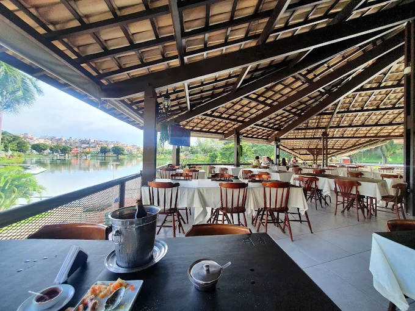
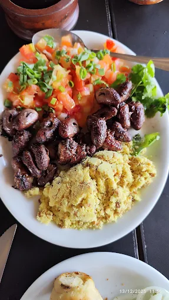

Em dia de jogo do Bahia, A Porteira vira espetáculo! Cerveja no gelo, a brisa gostosa do Dique do Tororó e o som da torcida na Fonte Nova ao fundo. Não tem preço torcer, comer bem e relaxar com essa energia única de Salvador.

Um prato de coração de galinha bem feito é covardia! A porção é super bem servida, o tempero é no ponto e a combinação clássica com farofa bem amarelhinha e vinagrete deixa tudo perfeito. É o tipo de petisco que você pede pra "beliscar" e, quando assusta, já devorou o prato todo sozinho de tão gostoso!